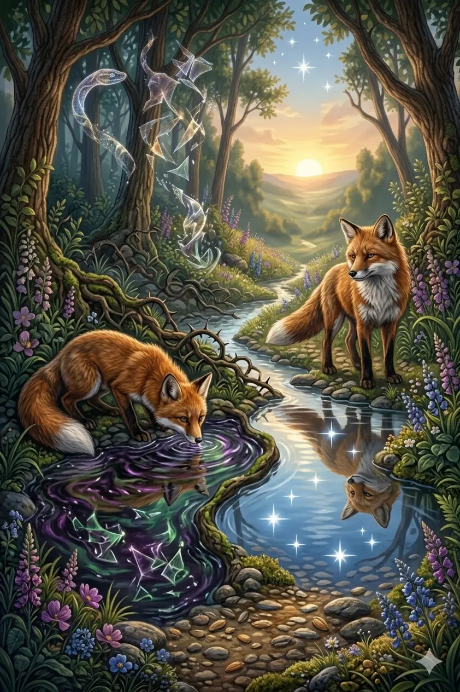

How Alcohol Fuels Pornography Addiction
“Do not get drunk on wine, which leads to debauchery. Instead, be filled with the Spirit.”
— Ephesians 5:18When what you take in clouds your clarity, even the right path can lead you astray.

In a quiet woodland, a young fox depended on a clear stream to find his way home each night.
The water reflected the stars above and the path ahead, guiding his steps with quiet certainty. When he drank from it, his mind was sharp and his senses alert. He moved carefully, avoiding thorns, traps, and hidden drops along the forest floor.
One evening, he came upon a different part of the stream.
The water there shimmered strangely—darker, heavier, yet inviting. Curious, the fox drank deeply. At first, nothing seemed different. But as he continued on his way, the reflections in the water began to blur. The stars no longer aligned. The path bent and twisted where it once ran straight.
The fox stumbled.
What once looked like safe ground led him into thorns. Shadows appeared where none had been before. The more he trusted the clouded stream, the more lost he became.
From a distance, an older fox watched quietly.
The next night, the elder led him back to the clear stream.
“Drink here,” he said.
The young fox hesitated, then obeyed.
Slowly, the reflections returned. The stars grew sharp again. The path reappeared—not new, not different, but as it had always been.
And the fox understood that it was not the forest that had changed—
but what he allowed to shape how he saw it.
Alcohol and pornography are often linked in ways that people don’t realize. Many who struggle with pornography addiction find that alcohol lowers their inhibitions and makes it harder to resist temptation. Likewise, those caught in a cycle of pornography may turn to alcohol as a way to numb guilt, stress, or loneliness. This chapter explores how alcohol fuels pornography use, weakens self-control, and creates a destructive cycle.
Alcohol directly impairs the parts of your brain responsible for judgment, impulse control, and decision-making—making you far more vulnerable to temptation.
“Be alert and of sober mind. Your enemy the devil prowls around like a roaring lion looking for someone to devour.”
— 1 Peter 5:8
Take a moment to step away and let what you’ve reflected on settle in your heart.
Alcohol and pornography often feed each other in a destructive loop that becomes harder to escape over time.
“No temptation has overtaken you except what is common to mankind. And God is faithful; He will not let you be tempted beyond what you can bear. But when you are tempted, He will also provide a way out so that you can endure it.”
— 1 Corinthians 10:13
Well done. The clouded stream may look inviting, but it will blur your path. Choose clarity. Choose sobriety of mind. Drink from what is true, and the way forward will be clear.
Heavenly Father, I confess that I have struggled with alcohol and temptation. I see how they are connected and how they pull me away from You. Give me strength and wisdom to resist temptation and the courage to make changes in my life. Help me to live with a sober mind and a pure heart. In Jesus’ name, I pray. Amen.
Use the links below to continue your journey.